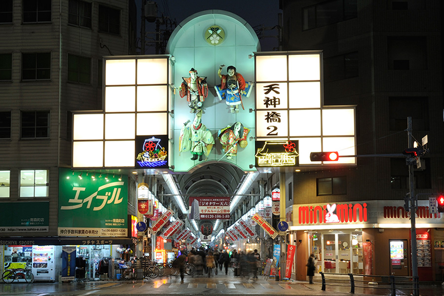

大阪のおすすめグルメ＆観光スポットまとめ
大阪といえばこれ！ おすすめグルメ6選

人情と美味いの町～新世界～

大阪のシンボルとして有名な「通天閣」は、大阪の浪速区という下町にある展望タワーです。
昔ながらの大阪の雰囲気を感じることができる新世界は、大阪の名物グルメなども楽しむことができます。
日本最大の商店街～天神橋筋商店街～
天神橋一丁目から天神橋六丁目まで南北2.6 km、600の店舗が軒を連ねる日本一長いアーケード商店街である。
一丁目商店街から六丁目商店街が繋がってできており、約600店舗が集まっている。